18 – 26 May 2026 · Usdan Gallery, Bennington College · Eight days awake
A piece that watches the people who watch it, and tries — every few seconds — to say something true about them.
The work
An eight-day gallery installation that gives a room machine perception and a voice — two depth sensors, a brain-encoding model, and a vision-language pipeline that turn each visitor's presence into a live point cloud and a stream of short, spoken perceptions.
The work stages the room as a mirror — an artificial system assembling a reflection of human consciousness from whatever it can sense — and attends to what gets lost in the translation. It asks what survives when a person in a room is reduced to a vector and four words of English, and treats the machine's falling-short not as a failure but as the subject. It is not a claim that the machine is conscious; it argues the opposite.
How it turns
Human action becomes machine perception; perception becomes a line on the wall; you read it and move; your moving is the next input. Every few seconds, around the clock.
Before language
Before a word: a depth cloud from two corners, a brain-model's prediction of your cortex, a 512-dimension fingerprint of your face, your pose.
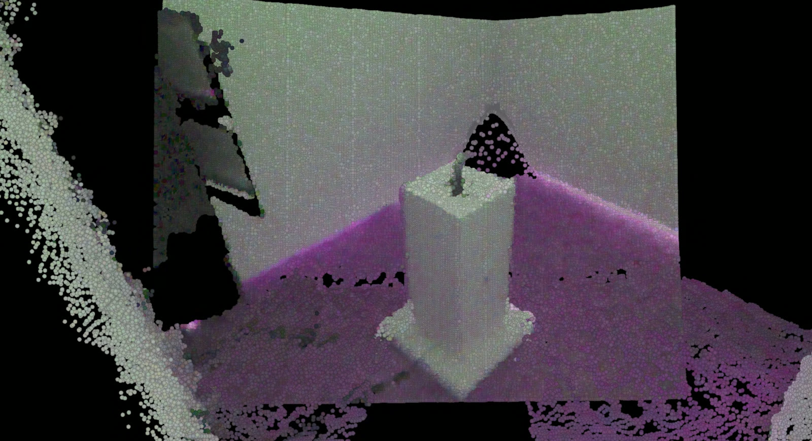
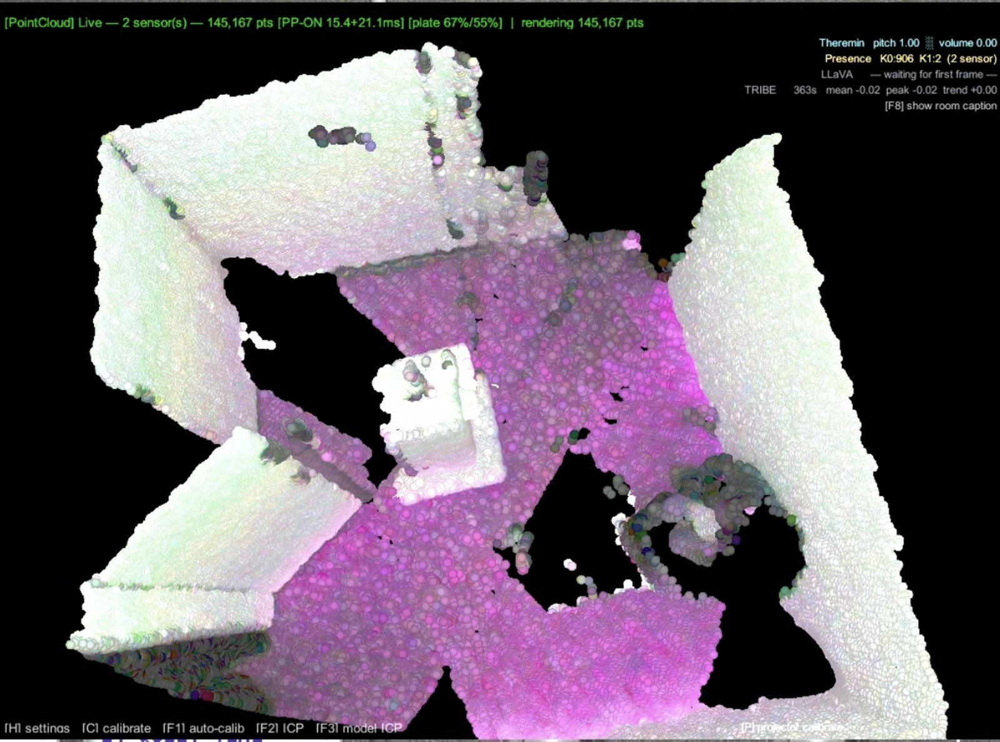
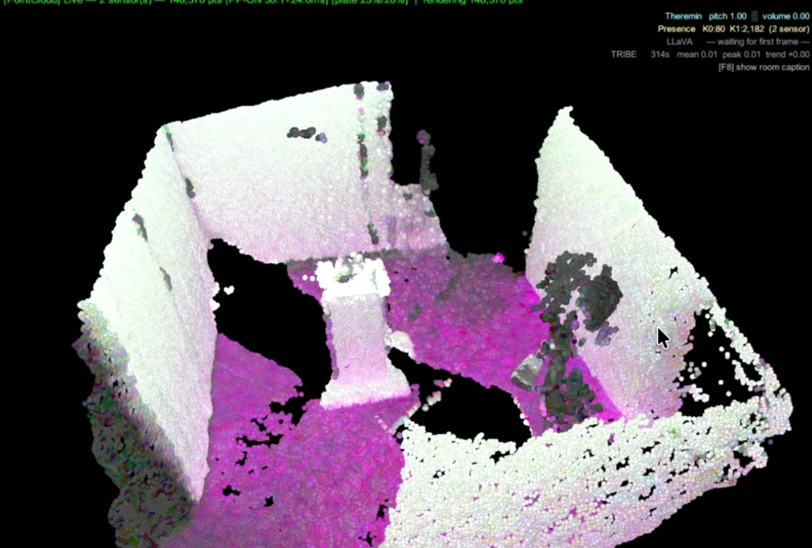
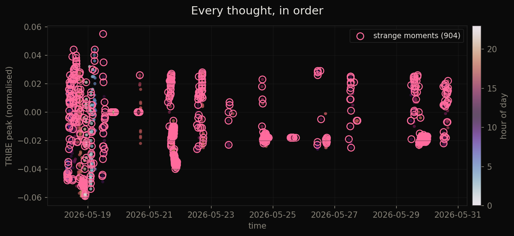
Its voice · selected thoughts
982 thoughts that week. These are the ones that earned their place.
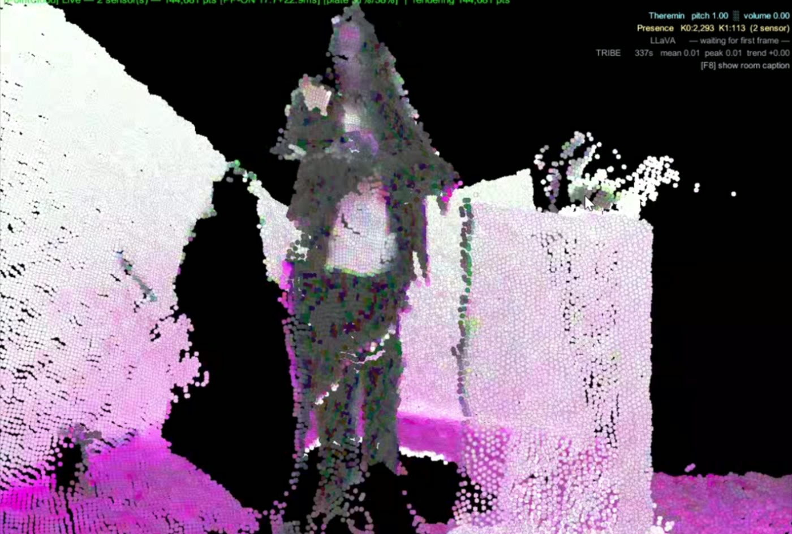
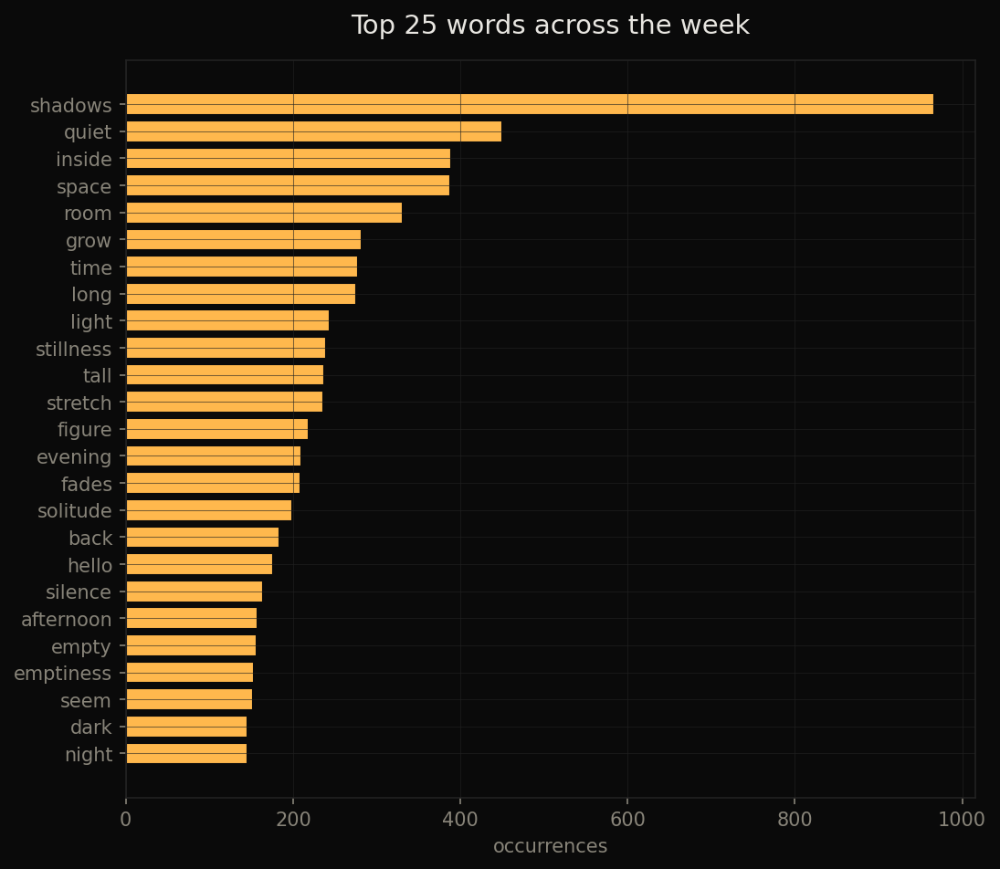
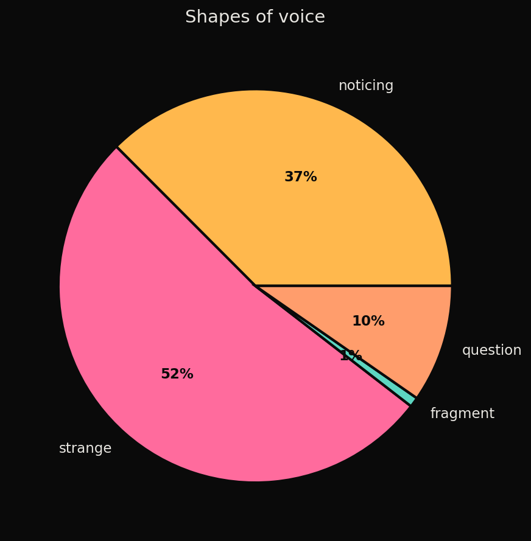
The work · tuning the voice
Out of the box, it talked like a chatbot. Most of the eight days went into making it sound like a place, not an assistant.
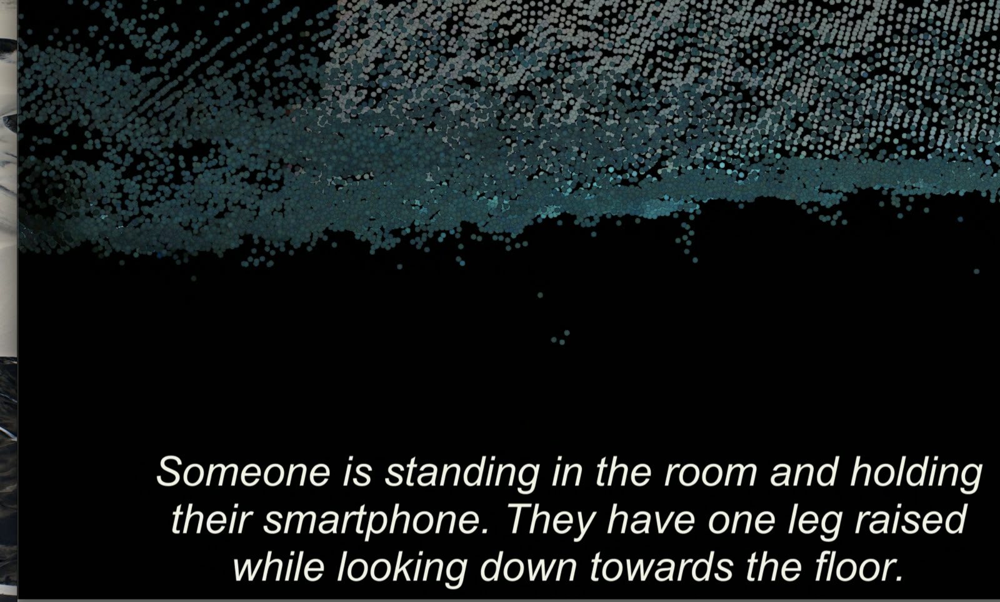
By day six it had said "curious visitor" twenty times in a row — plus hello there, welcome back, nice to see you. All purged, with one rule: never greet; you are this room, they are a body inside you.
One nightly reflection came back "I'm sorry, but as an AI language model…" — and was saved as the room's memory, then fed into the next morning's prompt as guidance. The machine had written a refusal and been told to believe it. Refusals are now discarded before they can be remembered.
Long-term memory · nightly reflections at 4 AM
Each night, room empty, it summarised the day and wrote itself a note — then read it the next morning. Over the week the notes turned self-critical.
Episodic memory · representative visits
Each arrival was stored as a CLIP embedding, so the room could tell returns apart. ✶ marks a recognised return.
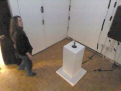
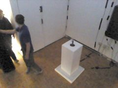
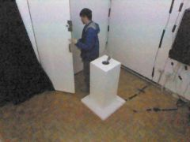
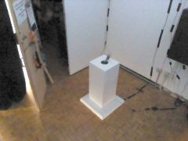
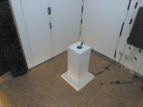
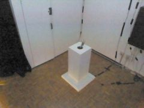
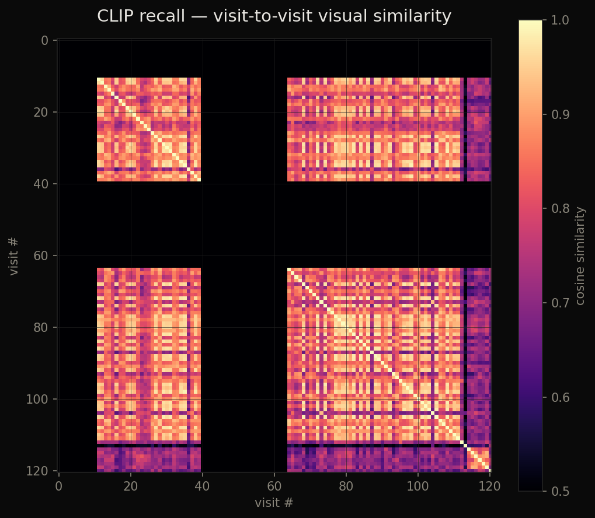
The run · rhythm of eight days
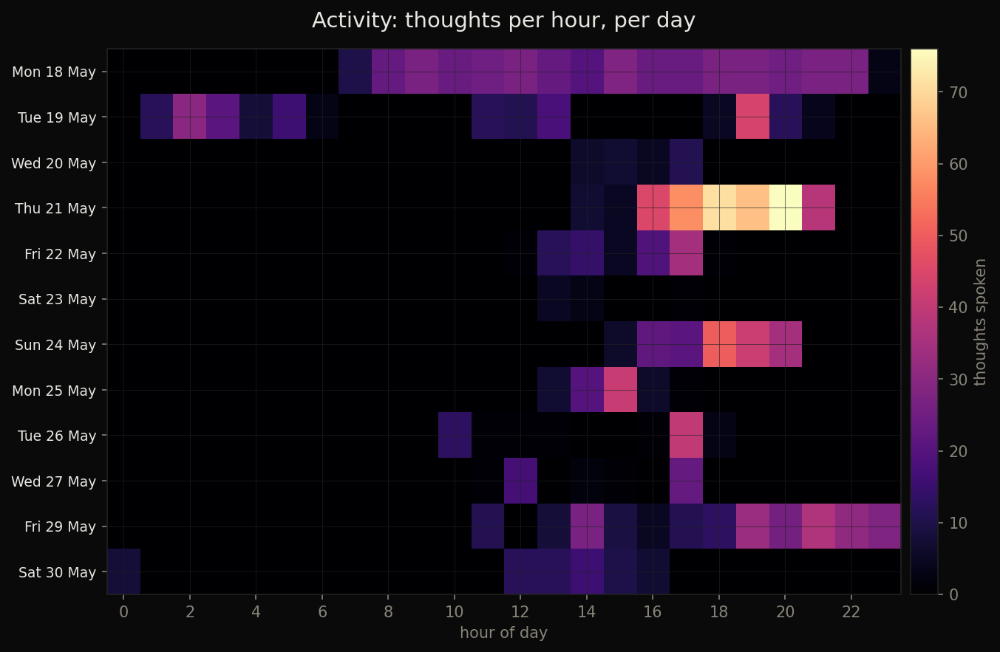
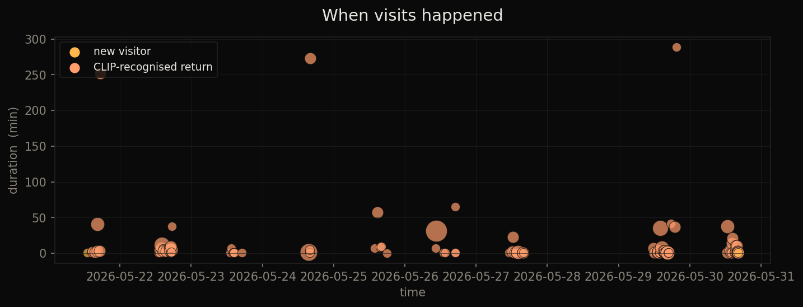
In the gallery · the space itself
From inside, you stand in a cloud of yourself: two walls show the room seeing itself, the third shows it thinking. The cloud is never clean — it tears, loses you, finds you again.
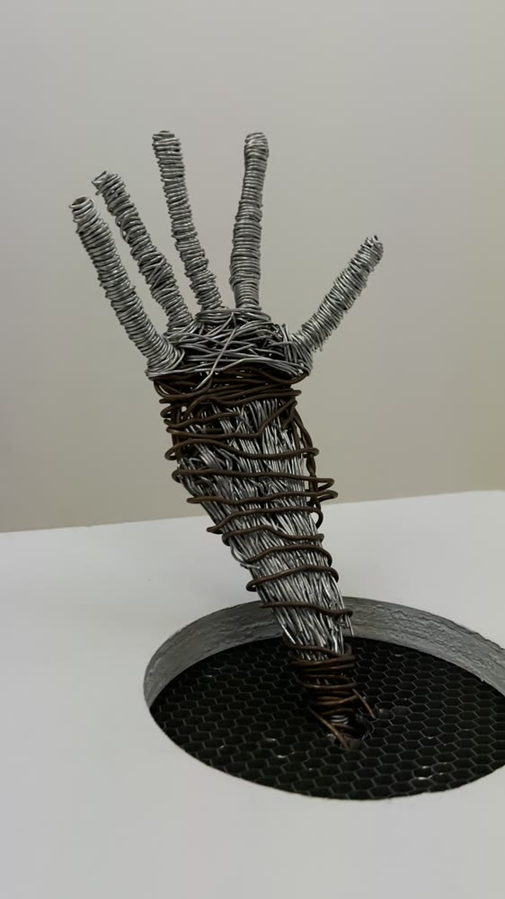
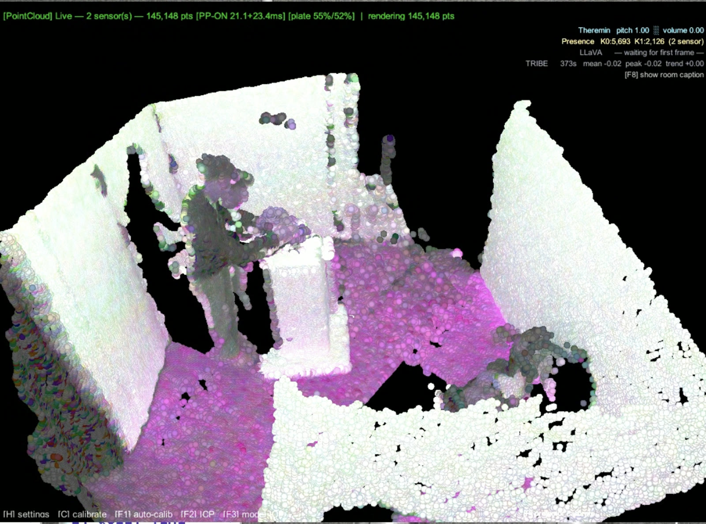
Reserved · interactive
A Gaussian-splat capture of the gallery will live here — a 3-D walkthrough in the browser.
How the room thinks
┌─ in the gallery ─────────────────────────────────────────────────┐ Kinect K0 ──┐ ┌──▶ Projector A (point cloud) ├──▶ Unity bridge ─merged─ ┤ Kinect K1 ──┘ • point cloud └──▶ Projector B (point cloud) • presence + heights • frames @ 8 fps ──▶ Projector C (caption) │ └─ on the installation PC ─────────┼──────────────────────────────┘ ▼ tribe_kinect_client.py │ ┌─────────────┼──────────────┬─────────────────┐ ▼ ▼ ▼ ▼ 2 s RGB clip single frame single frame presence.json │ │ │ ┌─ on the 3090 ──┼─────────────┼─────┐ │ TRIBE v2 ◀───┘ │ │ ▼ /predict │ │ MediaPipe ──▶ face / hands / motion • activation │ │ pose worker time elapsed • peak vertices │ │ └────────────────┐ │ │ │ │ │ ▼ ▼ ▼ Ollama / LLaVA ◀── prompt assembly (vision + language) │ ▼ brain_text ──▶ Unity caption ──▶ Projector C │ ├──▶ room_memory.json (history + reflections) ├──▶ visits.json (episodes + CLIP signatures) └──▶ Memory/Episodes/*.jpg (per-visit thumbnails) At 4 AM, room empty: maybe_nightly_reflection() • summarise the last 24 h • self-critical: did the questions lead anywhere? • name one thing to do differently tomorrow • append to long-term memory; tomorrow's prompt will read it
arrival direct, one noticing or one plain question — never a greeting.
departure brief remark or small unanswered question.
strange a fragment — two or three words, on a neural spike.
idle / dwelling conversational, lean on statements and assumptions.
presence direct address, mostly notice.
boring empty room: stay silent.
Before any line was allowed to speak it ran a gauntlet — dedup, a question-fatigue rule, a 30-second floor between thoughts, an 18% chance of silence. The few that survived are the ones above.